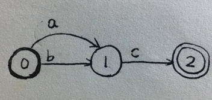
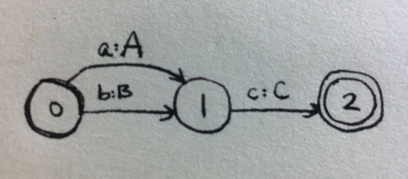
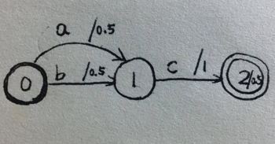
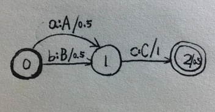
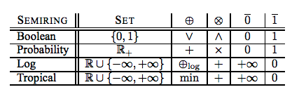

WFST详解#1
本文是WFST系列文章的其中一篇，想要了解更多可以点击这个系列的目录，欢迎您的到来～
WFST在机器翻译，语音识别，关键词检索等领域都有重要的应用。为了让您能够彻底了解这一个“工具”，我准备写几篇文章来详细说说。
表示与概念
FSA：有限状态自动机。一种图，弧上有作为接受的输入。

FST：有限状态转换机。一种图，弧上有输入，也有输出。

WFSA：加权有限状态自动机。一种图，弧上有输入，并且有权重。

WFST：加权有限状态。一种图，弧上有输入，有输出，并且有权重。

WFST最为常用，其他也会经常用到。
半环理论
下面引入半环理论。引入半环理论是为了更方便地叙述有关WFST的相关算法。有了半环这个工具，有些操作能够以非常清晰的方式呈现。
首先定义一种运算：
K表示所有参与运算的值。和分别表示一种运算。和也表示值，这两个值满足：。
认识什么是半环，先要认识两个相近的概念，环和场。
场，满足下面所有运算的就是场。比如四则运算就满足。
| addition | multiplication |
|---|---|
环，满足下面所有运算的就是环。
| addition | multiplication |
|---|---|
| None | |
| None | |
半环，满足下面所有运算的就是半环。
| addition | multiplication |
|---|---|
| None | |
| None | None |
从上面的图其实就可以知道三者的关系，半环最宽泛，场最严格，环居其中。
下面是几个常用的半环

其中 。
Tropical半环和Log半环是最常用的。我们可以尝试把这套运算带入上面半环的符合条件中验证一下，不用怀疑，都是符合的。
WFST如何用半环理论来表示
有了半环这一个工具，我们还需要定义一些变量来表示图。
FST可以表示为
- 表示输入
- 表示输出
- Q表示状态集合
- E表示弧的集合，表示为：
- I表示起点
- F表示终点
WFST表示为
其中和上面FST不同，或者说多出来的符号含义为：
- 表示初始权重函数
- 表示最后状态的的权重
- E这里需要考虑弧的权重，表示为：
有了上面的这些工具（半环和符号），我们可以把WFST表示为如下的形式：
这一条公式表示了一个转换。这个转换从I开始到F，输入x，得到y。其中的表示整体的结构，w表示其中的一条路径权重做运算进行结合。上面WFST的公式含义就是：对所有路径上的权重进行操作，然后用操作结合起来。
到此，我已经介绍完WFST表示的一些基础的知识。